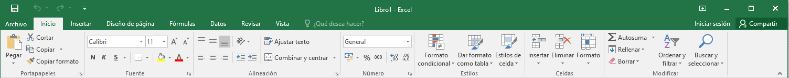
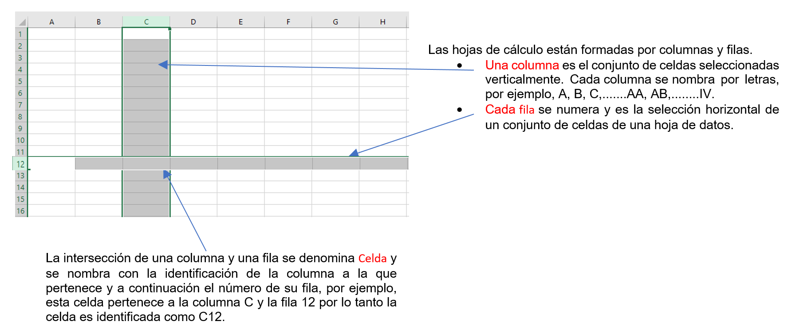
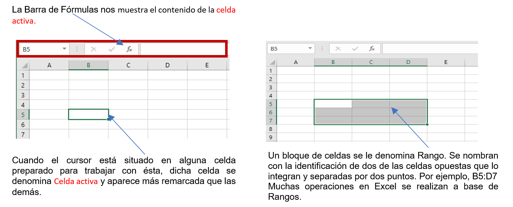
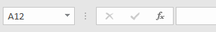
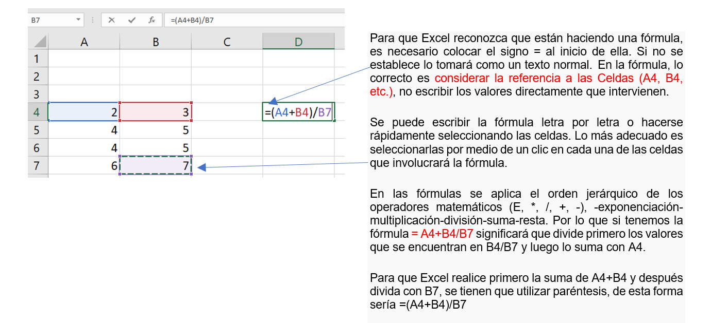
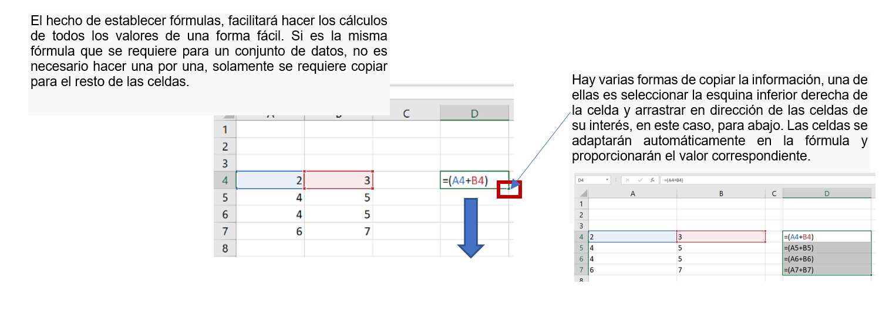
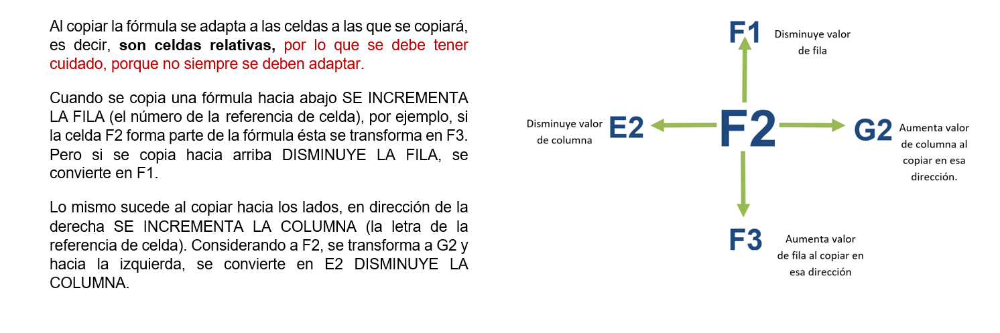
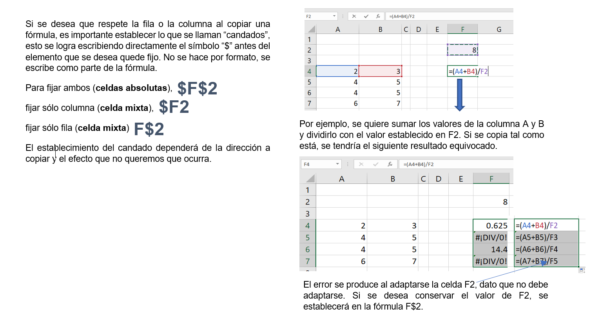
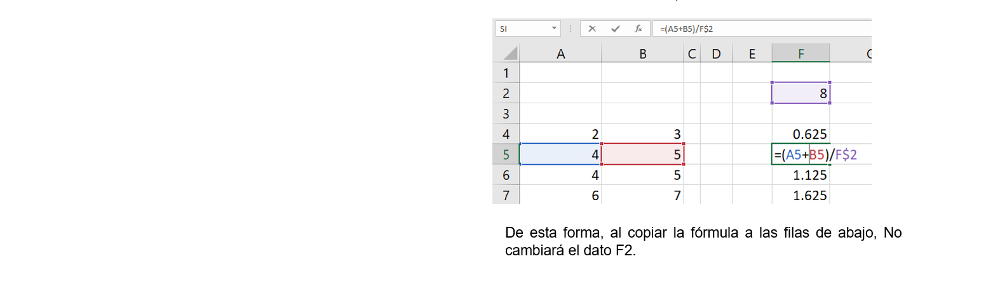

Excel está organizado en pestañas al igual que en Word. Las principales pestañas son Inicio, Insertar, Diseño de página, Fórmulas, Datos, Revisar y Vista. En ellas se encuentran los distintos grupos y botones con las opciones disponibles.

.
CONCEPTOS IMPORTANTES PARA TRABAJAR EN EXCEL
Todo archivo creado con Excel es un Libro de trabajo. Al guardarlos, éstos se crean con la extensión .XLSX. Al iniciar una sesión de Excel automáticamente se abre un nuevo libro de trabajo con el nombre Libro1. El número del libro irá variando dependiendo de cuántos se desarrollen en una sesión. Así si empezamos otro trabajo, el nombre que se asigna será Libro2, el siguiente Libro3, y así sucesivamente. Este nombre asignado solamente sirve como referencia mientras no se guarde, no significa que el archivo ya se encuentra guardado.
Un libro de trabajo está formado por hojas de cálculo, una herramienta muy útil para trabajar con cálculos u operaciones de una gran cantidad de números. El número de hojas de cálculo en un libro de trabajo puede variar entre 1 y 255. La identificación de las hojas de trabajo se encuentra en la parte inferior de la ventana de Excel. Cada una de ellas nombradas de la forma Hoja1, Hoja2... o 


.
.
MOVIMIENTOS EN HOJA
Las teclas activas para poder desplazarse a través de la hoja son:
| MOVIMIENTO | TECLADO |
|---|---|
| Celda Abajo | FLECHA ABAJO |
| Celda Arriba | FLECHA ARRIBA |
| Celda Derecha | FLECHA DERECHA |
| Celda Izquierda | FLECHA IZQUIERDA |
| Pantalla Abajo | AVPAG |
| Pantalla Arriba | REPAG |
| Celda A1 | CTRL+INICIO |
.
.
.
La forma rápida de moverse por la hoja cuando se conoce la celda donde se desea ir es escribir su nombre de columna y fila en la caja de texto del cuadro de nombres a la izquierda de la barra de fórmulas, y pulsar la tecla INTRO.

.
.
INTRODUCIR DATOS
En las celdas de la hoja se pueden introducir directamente VALORES CONSTANTES: textos, números o fechas, solamente deben situar el cursor sobre ella y teclear los datos que deseen introducir.
NÚMEROS. Para introducir números puedes incluir los caracteres 0,1,2,3,4,5,6,7,8,9 y los signos especiales + - ( ) / % E e $. Por defecto los números aparecen alineados a la derecha en la celda.
- El signo (+) delante de los números se ignora, y para escribir un número negativo debe ir precedido por el signo (-).
- Al escribir un número entre paréntesis, Excel lo interpreta como un número negativo, típico en contabilidad.
- El carácter E o e es interpretado como notación científica. Por ejemplo, 3E5 equivale a 300000 (3 por 10 elevado a 5).
- Si un número se escribe con $, Excel lo identifica con el formato Moneda.
- Si introducimos % al final de un número, se considera como porcentaje.
- Para introducir fracciones tales como 1/4 deben escribir primero un cero para que no se confundan con números de fecha.
- Si un número no cabe en su celda se pasa automáticamente a anotación científica.
.
TEXTO. El texto puede contener letras, dígitos y otros caracteres especiales. Si un texto no cabe en la celda pueden utilizarse celdas adyacentes que están en blanco a su derecha para visualizarlo, no obstante, el texto se almacena únicamente en la primera celda. El texto aparece, por defecto, alineado a la izquierda en la celda.
.
FECHA U HORA. Para introducir una fecha u hora, se escribe directamente de la forma en que se desea que aparezca. Al igual que los números, las fechas y las horas también aparecen alineados a la derecha en la celda.
Una vez que se tenga el dato pueden utilizar:
- INTRO: Se valida el valor introducido en la celda y además la celda activa pasa a ser la que se encuentra justo por debajo.
- TECLAS DE MOVIMIENTO: Se valida el valor introducido en la celda y además la celda activa cambiará dependiendo de la flecha pulsada, es decir, si pulsamos FLECHA DERECHA será la celda contigua hacia la derecha.
- CUADRO DE ACEPTACIÓN: Es el botón
 de la barra de fórmulas, al hacer clic sobre él se valida el valor para introducirlo en la celda pero la celda activa seguirá siendo la misma.
de la barra de fórmulas, al hacer clic sobre él se valida el valor para introducirlo en la celda pero la celda activa seguirá siendo la misma.
.
.
FÓRMULAS. Además, en las celdas de la hoja se pueden introducir FÓRMULAS: una secuencia formada por valores constantes, operadores, referencias a otras celdas, nombres, funciones.





Recuerden poner el signo $ delante del nombre de la fila, de la columna de la celda, o en ambos dependiendo del elemento que deseen conservar al copiar las fórmulas. De forma que, aunque copiemos la celda a otra, nunca variará la referencia.